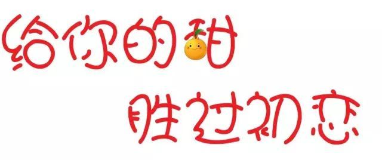

橙心橙意
让您享受优质服务！
极大简化购买流程
从前的您吃橙子的过程=果农
>>收购商(保鲜剂)>>运输(保鲜剂)
>>批发市场(保鲜剂,催熟剂,甜蜜素,打蜡)
>>市场>>您
现在的过程=果园>>快递>>您
让您吃到优质水果！
北有冰糖心，南有冰糖橙。麻阳冰糖橙产于湖南省麻阳苗族自治县，
麻阳，地处湘西边陲的一个苗族自治县，这里历史悠久，民族文化底蕴深厚。
冰糖橙，又名冰糖柑，原产湖南麻阳县，是当地甜橙的新品种，20世纪60年
代被发现，麻橙是麻阳地区优质橙类，麻阳冰糖橙因其独特地理气候/土壤条件/种
植方式，是苗乡人眼中的“冰糖泡”，意为“冰糖泡出来的果子”，甜酸比为41:1，远高于赣南脐橙的13:1和华盛顿橙脐橙的10:1，被誉为最甜的“小橙王子”

业务介绍
*
o2o模式：
O2O即Online To Offline（在线离线/线上到线下），是指将线下的商务机会与互联网结合
让互联网成为线下交易的平台，这个概念最早来源于美国。
1.线上模式：
支持消费者线上订单 到店自取
支持消费者不出门享受到美味
与消费者开展有规律的多渠道交流，同时为这些消费者建立起丰富的客户档案
1.线下模式
线上线下优势互补
在各地开设橙心超市
定期组织参观果园等等农家乐活动让您拥有多种体验